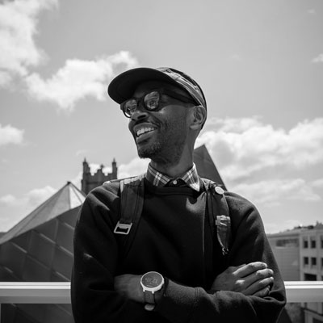
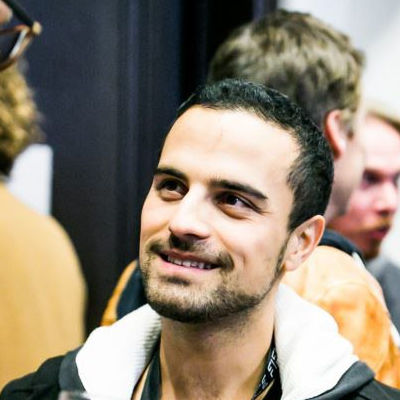

Session Details
Day 1: Thursday 19th
Opening Keynote
Dan Gross, Senior Director, Samsung ARTIK Global Support
Dan is the Sr. Director of Global Support and Ecosystem for Samsung's new IoT platform, ARTIK. He has been a professional software developer for over 20 years, most of the time spent in Silicon Valley. His passion are the pursuit of frictionless developer tools and solving real business issues. Prior to joining Samsung, he has helped companies such as: Sun Microsystems, Oracle, HP, and TRX Training. Dan lives in San Francisco.
What Is Samsung Internet?
Laszlo Gombos, Director of Engineering, Samsung Research America
Laszlo is leading the Web Platform team for Samsung in the USA. He is a veteran moving the web forward with over 15 years of experience. Lately he has been focusing on VR/AR, payment and privacy on the web.
Daniel Appelquist, Director of Web Advocacy & Open Source, Samsung Research UK
Dan is the Director of Web Advocacy and Open Source at Samsung Research UK. He is also co-chair of the Technical Architecture Group at the W3C and sits on the Open Standards Board for the UK Government. He lives and breathes the open web.
PWA, Native Apps, oh my! Making sense of the evolving web app landscape
We all love web code, but there is only so much you can do in the browser. Native apps allow you to do more, but trying to shoehorn web code into a native experience historically hasn't served our users well. Things are different now. As it turns out, we no longer have to compromise between a great user experience and our familiarity with HTML, CSS, and JavaScript.
In this talk, we’ll work to make sense of the evolving web app landscape. We'll cover everything from Progressive Web Apps to React Native to Electron to HWAs, and look at how you can maintain one web code base while still ensuring your apps run brilliantly both in your browser as well as natively on iOS, Android, and desktop devices.

Rey Bango, Web Developer Advocate, Microsoft
Rey Bango is a developer advocate at Microsoft focused on helping developers build awesome cross-browser experiences. He’s an ardent supporter of standards-based development and open-source development. He's taken an interest in information security, especially appsec, and wants to help build more secure experiences.
Progressive Web Apps to the Rescue
When InspireHUB was founded in 2013 it was immediately retained by the Mandela family to help use technology to fight the pediatric healthcare crisis in South Africa. In this talk, Co-Founder Karolyn Hart shares the story of how Progressive Web App technology came to the rescue for InspireHUB clients, what the team learned about using bleeding edge technology and how a small, unknown, scrappy group of devs ended up being the first to do a whole lot of cool stuff.
Karolyn Hart, Co-Founder/Chief Operating Officer, InspireHUB
When InspireHUB was founded in 2013 it was immediately retained by the Mandela family to help use technology to fight the pediatric healthcare crisis in South Africa. In this talk, Co-Founder Karolyn Hart shares the story of how Progressive Web App technology came to the rescue for InspireHUB clients, what the team learned about using bleeding edge technology and how a small, unknown, scrappy group of devs ended up being the first to do a whole lot of cool stuff.
Mixed Reality: Where the virtual world meets IoT
Virtual Reality and the Internet of Things are two of the most important technologies that arise in the past years. VR has the potential to change the world in some surprising ways, while Internet of Things already has transformed the way we live our lives. It is the confluence of these two technologies, that offers the most promising opportunity of all. In this talk, we'll introduce Samsung's big vision on IoT. How we build Samsung ARTIK from Module to Cloud and how we combine IoT and webVR to connect the real world to virtual reality.
Wei Xiao, Technical Partnership Management, Samsung Strategy and Innovation Center
Wei is the principal technical evangelist for Samsung's IoT platform ARTIK. Wei has a passion to inspire and work with developers. Prior to Samsung IoT, she worked as a technical evangelist for Samsung Mobile, Wearables and VR.
WebAR.now()
WebXR will expand upon the capabilities of the immersive web. But you do not have to wait for the official release of WebXR to create WebAR projects. You can achieve WebAR experiences with current Web APIs and open source libraries. In this talk, I will talk about recreating Pokemon Go on the web and adding more complicated AR features, such as marker tracking and facial tracking.
Winston Chen, Sr. Engineer, Samsung Research America
Winston is an engineer on the Samsung Internet team based in the US. He primarily works on WebVR and security for Samsung Internet. He also works on various web-based projects such as WebAR and Web Payment.
WebAR.then()
AR on the web is coming. There are already experiments that expose advanced AR capabilities using web technologies and the WebXR standard is starting to include AR capabilities. In this talk the current status of these prototypes will be shown along with some demos built on top of them. But, what is the future of AR on the Web and why is it important? All these questions and more will be exposed and tried to be answered.
Iker Jamardo Zugaza, Tech Lead, Google Daydream WebXR
With years of experience in the videogame industry, both as a software engineer for AAA PC games and as CTO of one of the first HTML5 smartphone game technology startups (Ludei), Iker has also been a professor and researcher at his alma mater, the University of Deusto in Spain working on multimedia, web accessibility and VR and AR for over 10 years. For the past years, he has been actively working on immersive technologies trying to expose them on the web, first as a freelancer and now as the technical lead for the WebXR team inside Google Daydream. He is the main engineer behind the first Tango, ARCore and ARKit based Chromium and WebKit prototypes to expose Augmented Reality capabilities on the web and is a member of the WebXR standardization group.
Data protection is top of mind for consumers and regulators, what does that mean for product developers and the future of the Internet?
Thousands of companies keep track of just about everything we do online. As news of major security breaches and privacy violations go mainstream, increasing consumer demand and regulation seem to be on the verge of significantly changing the internet as we know it. This talk will explore the past, present, and future state of digital privacy and security as well as implications for developers.
Casey Oppenheim, CEO, Disconnect
Casey Oppenheim is Co-founder and CEO of Disconnect, a digital privacy company that creates software and technology that is actively used by over 50 million people. The Disconnect tracker protection lists are integrated into the Samsung Internet, Firefox, Brave, and Focus browsers as well as several popular privacy tools. Disconnect has won many awards including the Innovation Award for Privacy and Security at the South by Southwest Conference and was recently named best privacy software by the New York Times. Casey lives in the Bay Area with his wife and children.
Laszlo Gombos, Director of Engineering, Samsung Research America
Getting To Grips With CSS Grid
CSS grid finally brings 2D layouts to CSS, with some incredibly powerful tools for creating beautiful responsive layouts. We’ll start with the basics of Grid and then explore how to build some common layouts that you’ll see often around the web, along with some advice on what grid is not for!
We’ll take a trip through the history of web layout from tables to flex to learn the good the bad and the
ugly of coding up a design and the problems that grid can fix. We’ll then cover the basic language of Grid
and Grid composition using some responsive layouts as examples; finishing with the ‘holy grail’ layout built
in 5 lines of CSS. Grid, however, isn’t here to kill all other layout methods so it is worth mentioning that
other tools, such as flex, are still very useful and valid. We’ll then go on to cover some more advanced uses
of Grid such as template area naming and how and why we might implement a subgrid-like effect using
display:contents.
Jo Balletti, Developer Advocate, Samsung Internet
Jo is a Web Developer Advocate for Samsung Internet who is passionate about good CSS. She’s got 6 years experience as a front end developer and has worked in various parts of the tech industry from startups, agencies, charities to large organisations. She is also mentor and organiser at codebar.io where she is able to action her passion not only for teaching good use of the web but also for improving the diversity and inclusivity of the tech industry.
Web Bluetooth for Fun and Profit
The Web is moving into the physical world. Wearables, sensors, even drones... the availability of Bluetooth Low Energy in our smartphones is driving a 'connected devices' revolution. Using the Web Bluetooth API, we can start controlling the world around us, with no native code required.
Peter O'Shaughnessy, Developer Advocate, Samsung Internet
Peter is a developer advocate in Samsung's web browser team. He enjoys helping web developers to make the most of the web platform, especially up-and-coming Web APIs. In recent months he has been exploring and sharing about PWAs, Web Payments, WebVR and Web Bluetooth. He previously worked in a “future technologies” lab at an education company and as a tech lead at a national newspaper and two web development agencies.
A Rube Goldberg Machine & New Web Technology
There are some really large powerful tools landing in the browser in recent months. For example CSS Grid, Web Animations, Custom CSS Properties and Web Components. Each topic on it's own is complex and worth learning in depth. But I aim to show how exciting they be when used together.
Ada Rose Cannon, Developer Advocate, Samsung Internet
Ada is really passionate about Virtual Reality and other new Front End Web Technologies. Her favourite computer language is HTML (yes, really). Ada used to work in R&D on frontend web technology and now she is a Web and VR Advocate for the Samsung Internet Web Browser.
The Hateful Weight
Web development and the technologies employed are complex. What is not a Gordian knot is image weight. Image weight is oft a red herring of poor management resulting in poor #ux, along with dissolution of users’ data plans. With the world moving from mostly to near exclusively, data sensitive mobile clients, image optimization is crucial component of asset management. Making learned decisions about images is critical, from formats to art direction. The Hateful Weight will discuss:
- Formats, new and old.
- Their strengths and short comings
- The tools and strategies to oversee their optimizations
- And the need to address a varied and worldly audience.
At the denouement, attendees will have a much better understanding and grasp of image formats, the need for their management and optimization and the urgent necessity to consider and build for new markets.
Henri Helvetica, Freelance Dev / Performance Advocate
Henri is a freelance developer who has turned his interests to a passionate mix of site performance engineering and pinches of user experience. When not reading the deluge of daily research docs and case studies, or indiscriminately auditing sites in devtools, Henri can be found contributing back to the community, co-programming meetups including the Toronto Web Performance Group or volunteering his time for lunch and learns at various bootcamps. Otherwise, he’s riding track bikes, tooling with music production software or more recently, focusing on the fastest 5k possible.
Reflections from the Developer Roadshow Journey
Sandra Persing spent 10 months on the road collaborating with global partners and local meetups, influential speakers and freshly minted contributors, to bring over 57 Developer Roadshow programs all around the world. Join us as she reflects about the early days designing the program, wins and fails along the way, and some of the best practices used today in this weird and wonderful industry called developer relations.

Sandra Persing, Global PM DevRel at Mozilla
Sandra Persing is the Global Program Manager for Creators in Tech at Mozilla, investing in DevRel Events. She's the producer of over 57 Developer Roadshows as well as 3 tentpole developer events. She currently serves on the Advisory Board for Women Who Code, and is the CoFounder of DevRelSummit. Her current passion lies in finding opportunities to bring inclusion and equity in the virtual, augmented, and mixed reality worlds. Find her at meetups, conferences, and the busiest airport terminals.
Day 2: Friday 20th
The art of noise (keep talking)
Voice interaction is now commonplace: we converse with the digital assistants on our phones and our connected home devices, and the experience is improving all the time. But how do we design experiences for voice interaction? What can we learn from the experiences of using first generation voice input/output technologies like screen readers and speech recognition tools?
Full of practical ideas and interesting possibilities, this talk explores the past, present, and future of voice interaction design; and considers how to use the Inclusive Design Principles to create voice experiences that really work.
Léonie Watson, Director of Developer Communications, The Paciello Group
Léonie is Director of Developer Communications at The Paciello Group (TPG), and a member of the W3C Advisory Board. She is also co-chair of the W3C Web Platform Working Group, where she is responsible for many specifications.
Léonie contributes to projects like the Inclusive Design Principles, and co-organises the Inclusive Design 24 #ID24 conference. She is a mentor for young people learning programming with Microsoft’s Project Torino, and was technical editor for Laura Kalbag’s book Accessibility For Everyone.
Léonie is often found at conferences, talking about web standards, accessibility mechanics, and pushing the boundaries of inclusive design. She has also written about these things for Smashing magazine, SitePoint.com, and Net magazine, as well as on her own site Tink.UK.
The New Mobile Reality
Computing is inexorably moving to mobile, but mobile isn't a static target. If the web is going to be the future of client-side computing, it has to deliver outstanding experiences across the full set of devices and network users come to our services with. This talk digs into the constraints and how respecting them -- and leaning on the platform -- can help unlock our creativity for the greatest number of users.
Alex Russell, Senior Staff Software Engineer, Google Chrome team
Alex Russell (@slightlylate) is a Senior Staff Software Engineer on the Chrome team at Google where he designs new features for the Web Platform and leads Chrome's Standards work. He's a member of ECMA TC39 (the JavaScript language committee) and serves as an elected member of the W3C’s Technical Architecture Group where he works to improve the state of API design for the web. His recent projects include Progressive Web Apps, Web Components, ES6 features including Classes and Promises, and Service Workers. Previously he helped build Chrome Frame and led the Dojo Toolkit project. Alex plays for Team Web.
Sonarwhal: The Linter You Didn't Know You Needed
Who said that being a web developer is easy? HTML, CSS, and JS are just the basics. You are now supposed to know about a11y, security, performance, PWA and more, without forgetting how to transpile and bundle your code. It can be quite complicated to master all of this. In this session you will learn about the most common issues websites have (big and small) and what you can do to detect and fix them.
Antón Molleda, Sr. Program Manager, Microsoft
Antón Molleda, born in the little Spanish town of Barasoain, has been working on the web since the days IE6 ruled the world. For the last few years he's been enjoying the rainy weather of Seattle while working at Microsoft on open source projects to try to make the web better for everyone.
WebVR: Empowerment and Innovation on the Next Frontier
WebVR today offers a powerful space for everyday creators to make new worlds and tell their stories. With thoughtfully designed tools, inclusive on-boarding styles, and an understanding of why people become ‘makers’, we can cultivate a thriving WebVR community that is diverse in unexpected ways and drives the next generation of interdisciplinary innovation.
Kathy Trogolo, CEO of Fasility LLC
Kathy Trogolo is CEO and Co-Founder of Fasility LLC, a Boston-based WebXR consultancy focused on putting web-based augmented and virtual reality creation tools into the hands of everyday people. She has extensive classroom experience with students and teachers as a technology specialist and administrator, as well as software development experience. She holds a Bachelor of Arts in History from Cornell University and a Master of Arts in Educational Technology Leadership from The George Washington University.
Kathy recently founded Women in the Next Realities, a grassroots group connecting women interested in XR, AI, and data sciences for networking, learning, and practical guidance for projects. This group is for women developers, artists, designers, producers, educators, entrepreneurs, students and anyone interested in these transformative technologies. WNR offers members opportunities to connect with each other, test ideas/projects, find mentors and resources, and learn about how they can get involved in these exciting industries.
Documenting the Web on MDN
Every month, millions of web developers come to MDN for information about JavaScript, Web API’s, CSS and other core web technologies. Over the last 12 years, the MDN team, along with thousands of volunteers, has documented evolving web standards, browser compatibility, and helped new developers learn about web technologies.
In this talk, we’ll dive into new features and content, and look at how and the collaboration between Mozilla, Google, Samsung, Microsoft, the W3C and others on the MDN Product Advisory board is helping maintain a cross-browser focus, as well as what to expect in the future.
Ali Spivak, Head of Developer Ecosystem, Mozilla
Ali Spivak is the Head of Developer Ecosystem at Mozilla, and chairs the MDN Product Advisory Board. She has managed MDN for 5+ years and is committed to to an interoperable, cross platform web. Prior to Mozilla, she managed web production at Cisco, Edmunds.com, and numerous startups.
Game mechanics powered by the Gaze-At-Ratio (GAR)
Learn how content creators and publishers can measure a user's depth of attention and engagement to 3D objects in both VR/AR environments without disrupting the content or the user experience, and then employ that metric for various applications like A/B testing, content triggering, and monetization. One approach is powered by the Gaze-At-Ratio (GAR), an algorithm that determines the value of a user's gaze to a 3D object by factoring in the relative distance, duration, and depth of a user’s orientation as the object enters and exits their field of view.
Amir Bozorgzadeh, Co-Founder/CEO, Virtuleap
Amir Bozorgzadeh is cofounder and CEO at Virtuleap, the host of the Global WebXR Hackathon and the startup powering up the Gaze-At-Ratio (GAR) XR metric. Amir is a regular contributor to tech blogs like VentureBeat and TechCrunch on emerging tech, new media formats, gaming, and startup ecosystems.
Workshop: Creating an image viewer with WebXR
We will use A-Frame to create a nifty image viewer. Using assets from flickr, we will create an animated carousel image browser that works on phones and desktops.
Diego González-Zúñiga, Developer Advocate, Samsung Internet
A Senior Engineer at Samsung Research UK, Diego works as a Developer Advocate in the Samsung Internet team. Combining his interests in 3D in apps, GUIs, VR, creative uses of technology, and video games, he spends time wandering the VR fields in search of sense.
Workshop: Introduction to VR
Virtual Reality is really cool and can be used in the Web today on all kinds of devices. I hope to show you how we can build VR worlds today using only HTML.
Ada Rose Cannon, Developer Advocate, Samsung Internet
Ada is really passionate about Virtual Reality and other new Front End Web Technologies. Her favourite computer language is HTML (yes, really). Ada used to work in R&D on frontend web technology and now she is a Web and VR Advocate for the Samsung Internet Web Browser.